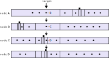

PING / PONG
FINDNODE / NODES
TALKREQ / TALKRESP
A →← B m(FINDNODE) A ← B challenge(d) A → B h(FINDNODE, response(d)) A ← B m(NODES) A ← B m(NODES) A → B m(PING) A ← B m(PONG)
A → B <random data> A ← B challenge(d) A → B h(FINDNODE, response(d)) A ← B m(NODES) A ← B m(NODES) A → B m(PING) A ← B m(PONG)

A → B FINDNODE (255, 254, 256) A ← B NODES
NODES message contains ENRsenr:-KG4QBGDTbrB8udGxEn-QhEFywTN7ucBMnkAUf-BVARI7X-bY2YzGrmVode9- SAtOzGrr4DAw7oPyzUxJx-vuEQDmG8UhGV0aDKQR-tys5AAAHL__________4JpZI J2NIJpcITPtPO7iXNlY3AyNTZrMaEDlzrVv1Fp355EsYz5t4NmD443jp4PuneFlk9 K_38Sln-DdGNwgiMog3VkcIIjKA
Node ID: 0008403b3ad4dcf13a995b8c898ab1d25fbd62eda16136acc990... Record has sequence number 20 and 6 key/value pairs. "eth2" 9047eb72b390000072ffffffffffffffff "id" "v4" "ip" 207.180.243.187 "secp256k1" a103973ad5bf5169df9e44b18cf9b783660f8e378e9e0fba... "tcp" 9000 "udp" 9000
[ 11834dbac1f2e746c449fe... // sig 14, // seq "eth2", 47eb72b390000072ffffffffffffffff, "id", "v4", "ip", cfb4f3bb, "secp256k1", 03973ad5bf5169df9e44b18cf9b7... "tcp", 2328, "udp", 2328, ]
A → B m(FINDNODE) hole A ← B created ...timeout... A → R n(RELAYINIT: B) R → B n(RELAYMSG: A) A ← B challenge(d) hole A → B created A → B h(FINDNODE, response(d)) A ← B m(NODES) A ← B m(NODES) A ← B m(NODES)
A → B TALKREQ (... initiator-secret, request data ...) A ← B TALKRESP (... recipient-secret, accept/rej ...) A → B encrypted sub-protocol packet (µTP) A ← B encrypted sub-protocol packet (µTP) A ← B encrypted sub-protocol packet (µTP)